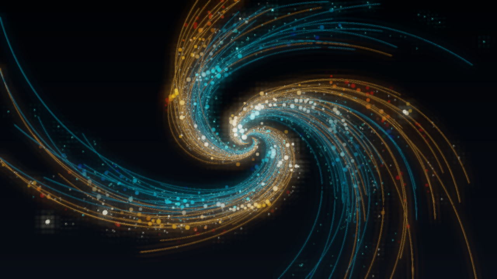
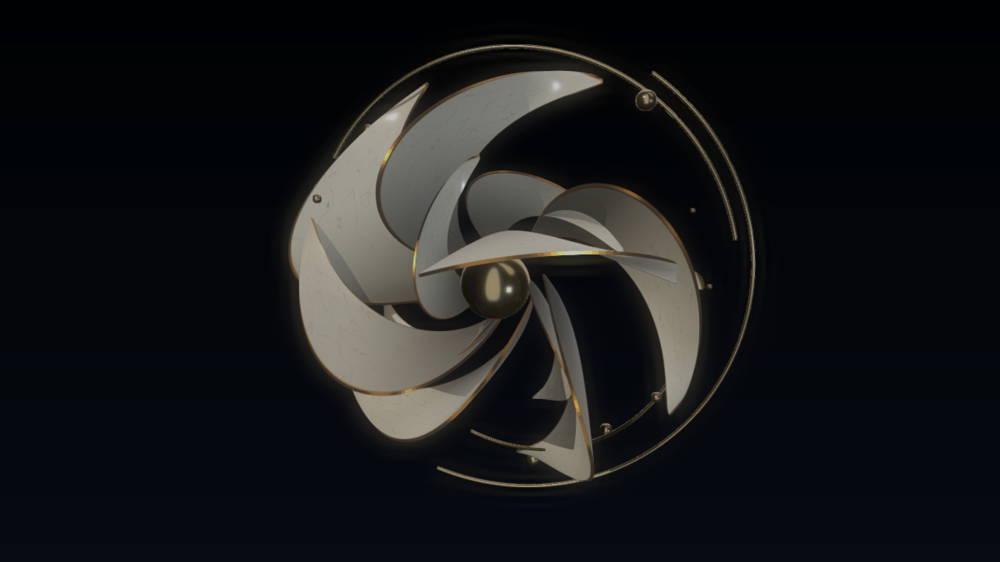
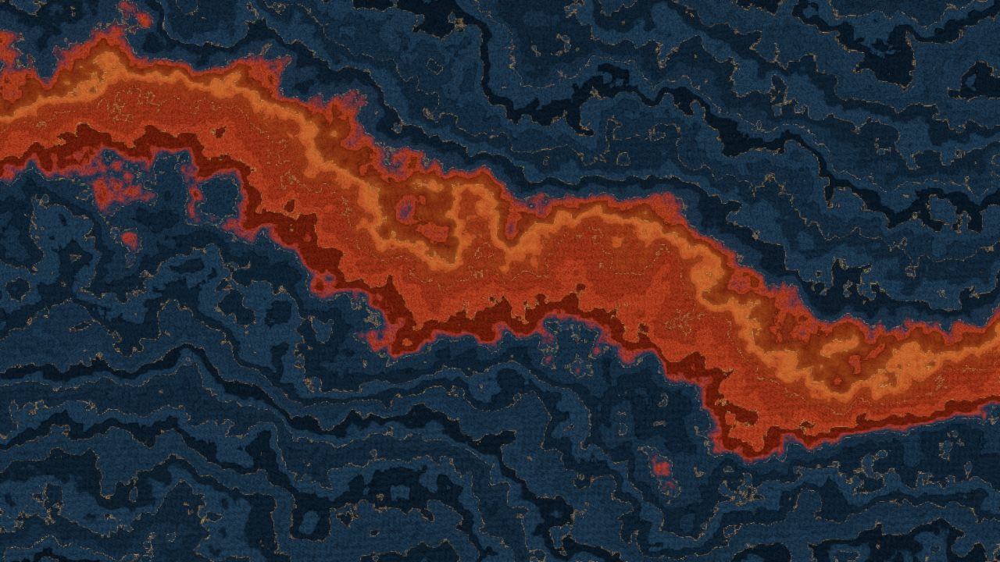
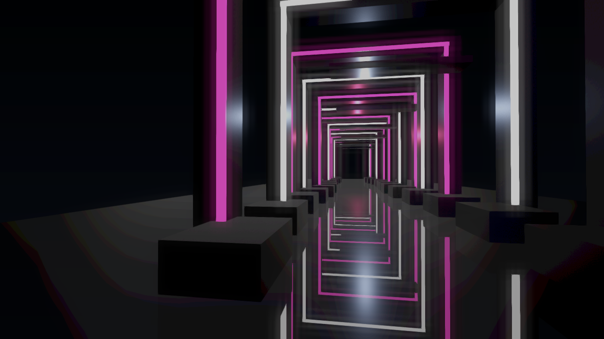

鎏光流涡
0.1 · 用户退回

0.2 · 实际 GPU 输出

三维细轨迹、景深、两组 GPU 粒子和辉光共同形成青金流涡。闪点已经明显；旋臂仍比概念规则，GPU 粒子层尚为屏幕空间。
概念、用户退回的 0.1 与实际运行的 0.2 对照。工程自评不代替用户验收。截图来自 D3D11 实际解码音乐驱动的 4 秒画面；视频为 Studio 16 秒音乐编排导出。


三维细轨迹、景深、两组 GPU 粒子和辉光共同形成青金流涡。闪点已经明显；旋臂仍比概念规则，GPU 粒子层尚为屏幕空间。


花瓣增加实际厚度、金属包边、材质贴图和自阴影。曲面遮挡更清晰；结构仍偏旋叶，柔和陶瓷摄影质感尚有差距。


连续多尺度噪声构造斜向红河、碎层与细金边，消除了采样接缝。仍更接近矿物层理，尚非真实流体模拟。


低机位、错层横梁、前景块体和地面倒影构成空间。反射采用镜像几何；材质较规整，尚无概念中的粗糙石面细节。